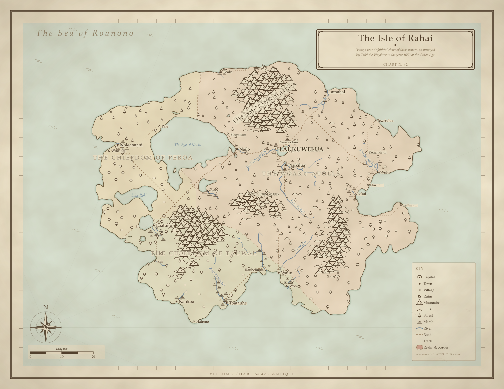

VELLUM
an atelier of imaginary cartography
Vellum surveys worlds that don't exist and drafts them as atlas charts. Give it a seed and it invents a landmass, simulates the rain that carves its rivers, grows its forests, founds its harbor towns, names everything in one of six invented languages, and partitions the land into quarrelsome realms. Then Vellum sits down at the drafting table and draws the maps, complete with parchment texture, hatched mountain ranges, a compass rose, a sea serpent, and a title cartouche. Same seed, same world, identical SVG.
EVERY CHART IS REPRODUCIBLE FROM THE NUMBER IN ITS MARGIN

Arms of the Realms
Every realm is given its own coat of arms, generated from the same seed and obeying the heraldic rule of tincture: no colour on colour, no metal on metal. Here are the three realms of the Isle of Rahai.


One World, Many Charts

{kind=link}
{kind=link}
Go Deeper
The Explorer →
Draw your own: type a seed, pick a style and climate, and the world is drafted live in your browser. Nothing is uploaded.
The Atlas of Rahai →
A bound volume: the world chart in three styles, two regional close-up surveys of the same terrain, and a gazetteer of every settlement with travelers' notes.
A Gallery of Worlds →
Twelve worlds from twelve seeds: archipelagos, islands, and continents, each with its own name, realms, and coastline.
How It Works
Give Vellum a number, called a seed, and it builds an entire world from scratch. First it raises land out of noise: noise layered at several scales, then pushed and pulled out of shape so the features wander and swirl instead of repeating in a regular pattern. That distortion is what gives coastlines their ragged, believable look instead of round, featureless blobs. Next it runs water downhill until every river finds its way to the sea. A simple climate of temperature and rainfall decides where forests, deserts, and tundra grow.
Towns settle where any founder would, near sheltered harbors, river mouths, and good soil, and roads thread between them by the easiest route, sharing corridors. Borders follow the lay of the land, tracing ridgelines and rivers. Place names are drawn from six invented languages, one per culture. All of it is reproducible: the same seed always draws exactly the same world, right down to the last coastline.
Under the hood: a zero-dependency TypeScript engine, using domain-warped gradient noise for terrain, priority-flood hydrology so every river drains to the sea, a Whittaker-style climate model, Dijkstra least-cost roads, and a single seed feeding fork-labeled random streams for full reproducibility.
Draw your own: read the README.